Презентация
Глушенок А. А.
Российский университет дружбы народов, Москва, Россия
28 октября 2026
Приобретение практических навыков по установке и простейшему конфигурированию POP3/IMAP-сервера.
Запускаем ВМ server.
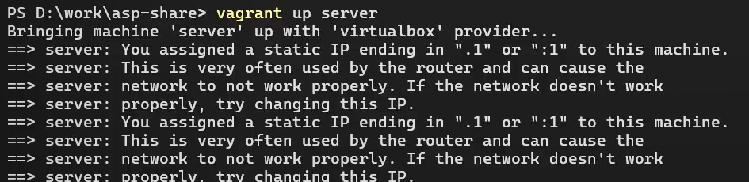
Подключаемся к ВМ servsr по SSH, переходим к суперпользователю.
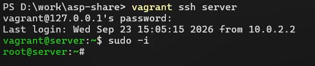
Устанавливаем необходимые для работы пакеты: dovecot и telnet.
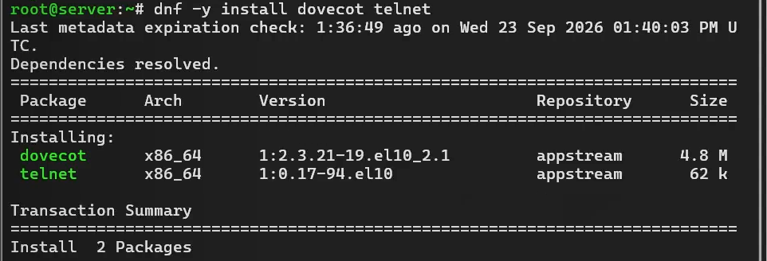
В конфигурационном файле /etc/dovecot/dovecot.conf прописываем список почтовых протоколов, по которым разрешено работать Dovecot: imap и pop3.
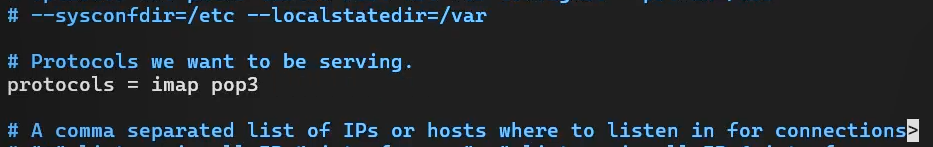
В конфигурационном файле /etc/dovecot/conf.d/10-auth.conf указываем метод аутентификации plain.
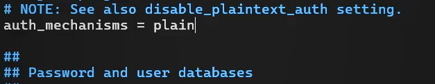
В этом же конфигурационном файле отключаем защиту паролей. Параметр по умолчанию - yes.
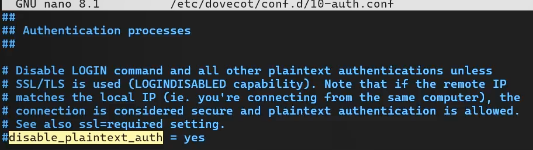
Заменяем его на no.
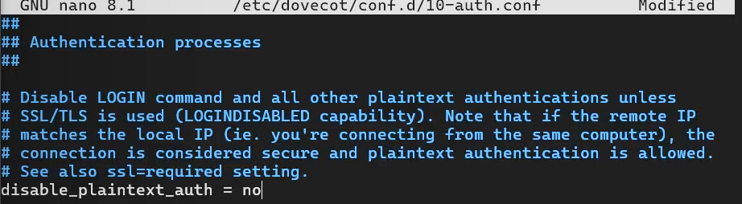
В конфигурационном файле /etc/dovecot/conf.d/auth-system.conf.ext для поиска пользователей указываем pam.
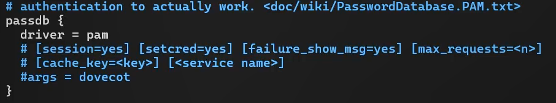
В этом же конфигурационном файле для поиска паролей указываем файл passwd.
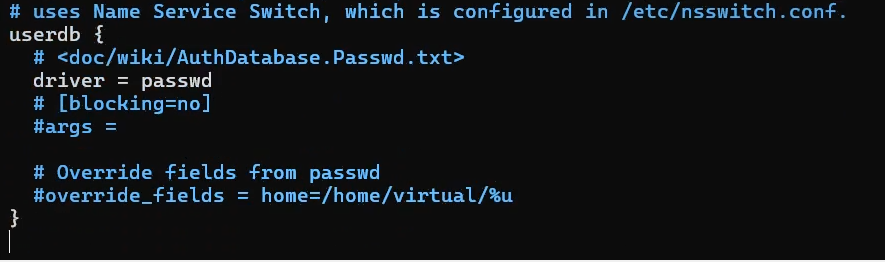
В конфигурационном файле /etc/dovecot/conf.d/10-mail.conf указываем каталог Maildir как место расположения почтовых ящиков.
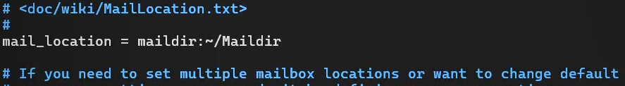
В Postfix указываем Maildir как каталог для доставки почты.
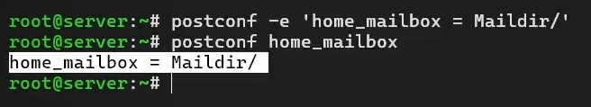
Просматривам список доступных для работы служб.
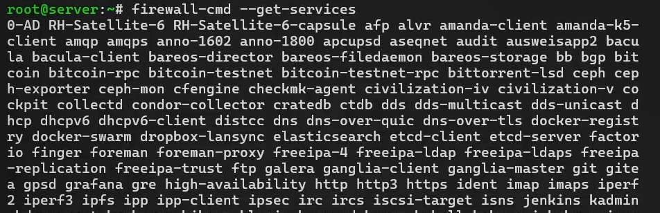
Разрешаем работу служб протоколов POP3 и IMAP в зоне по умолчанию.
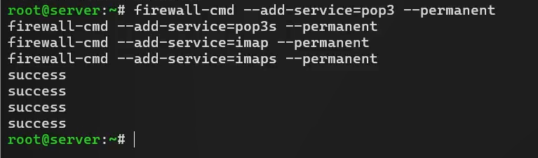
Разрешаем работу служб протоколов POP3 и IMAP во внутренней зоне.
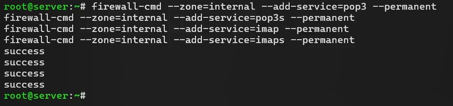
Просматривам список доступных для работы служб, видим, что в нем появились imap и pop3 (а так же imaps и pop3s).
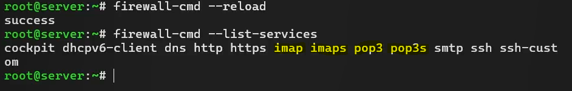
Восстанавливаем контекст безопасности в SELinux.
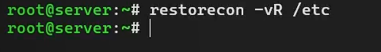
Перезапускаем Postfix, запускаем Dovecot.
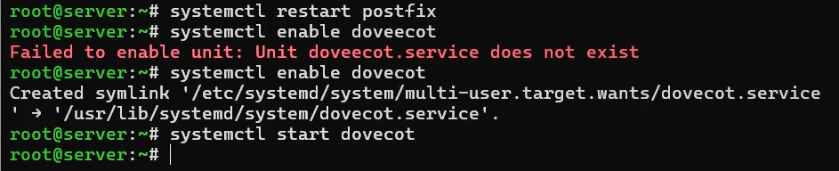
Проверяем,что Postfix успешно запущен (статус работы - active), и добавлен в автозапуск (enabled).
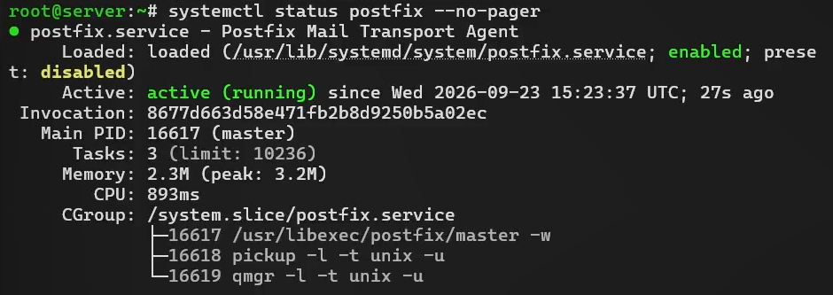
Проверяем,что Dovecot успешно запущен (статус работы - active), и добавлен в автозапуск (enabled).
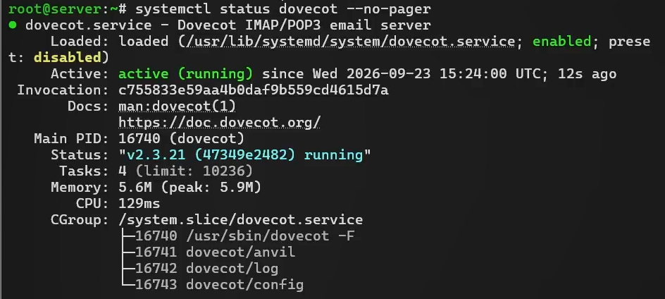
Заранее отправляем на почту 3 тестовых сообщения.
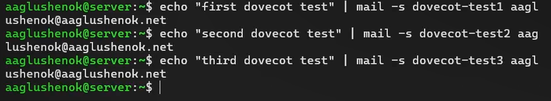
На дополнительном терминале ВМ server запускаем мониторинг работы почтовой службы. На терминале server просматриваем почту через mail, видим 3 отправленных ранее тестовых сообщения.
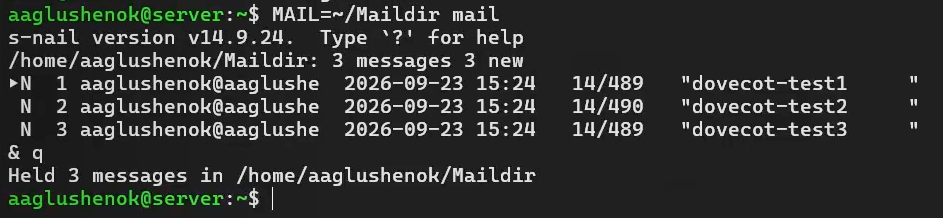
Аналогично просматриваем почту через doveadm, видим те же 3 тестовых сообщения.
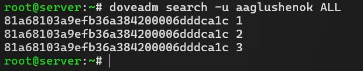
На терминале server проверяем, что ящик INBOX присутствует.
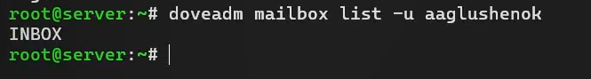
Запускаем ВМ client, перезходим к суперпользователю. Установите почтовый клиент evolution.
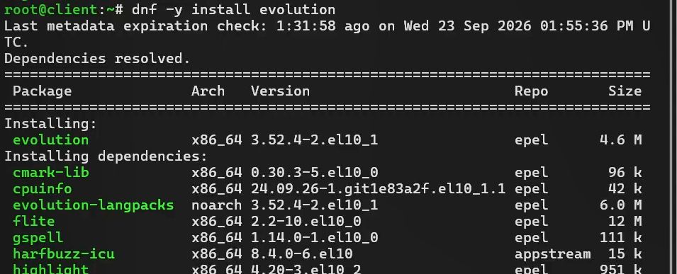
Запускаем почтовый клиент Evolution.Проверяем доступность почтовых портов IMAP и SMTP.
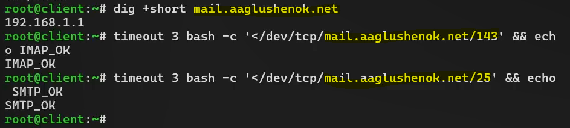
Начинаем настройку Evolution, следуя указаниям из материалов.
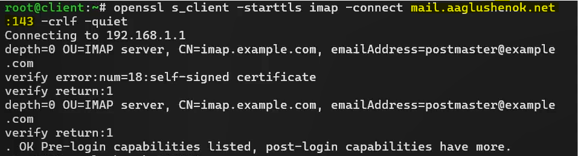
Продолжаем настройку Evolution, следуя указаниям из материалов.
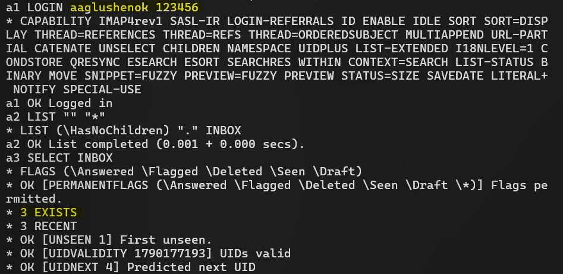
Завершаем настройку Evolution, следуя указаниям из материалов.
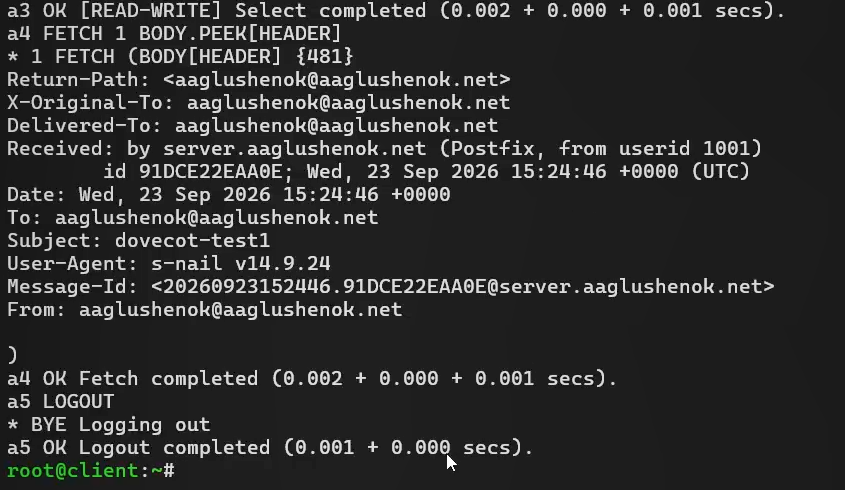
Из почтового клиента отправляем себе тестовое письмо.
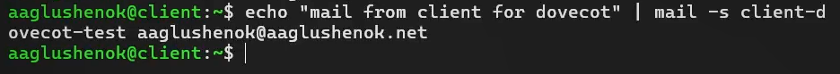
Проверяем, что письмо доставлено: проматриваем мониторинг почтовой службы на server.
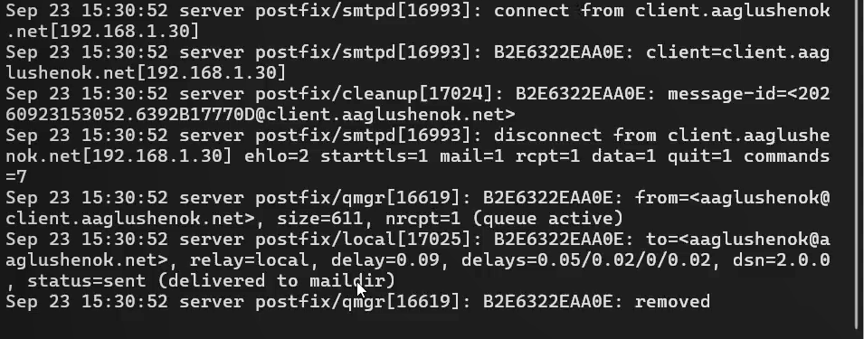
Дополительно проверяем, что письмо доставлено и появилось в Maildir.
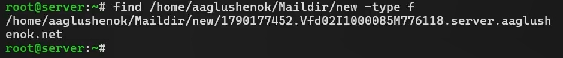
Дополительно проверяем, что письмо доставлено, через доставлено doveadm.
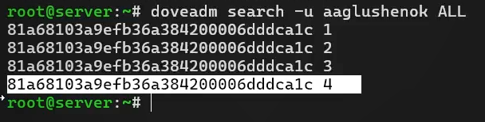
Проверяем работу почтовой службы: подключаемся с помощью протокола Telnet к почтовому серверу по протоколу POP3 (через порт 110), вводим логин и пароль.
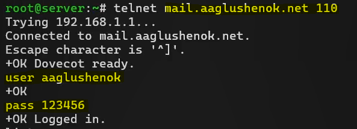
Продолжаем проверку работы почтовой службы: получаем список писем (list), получаем 1-е письмо из списка (retr 1), удаляем 2-е письмо из списка (dele 2), завершаем сеанс работы с telnet (quit).
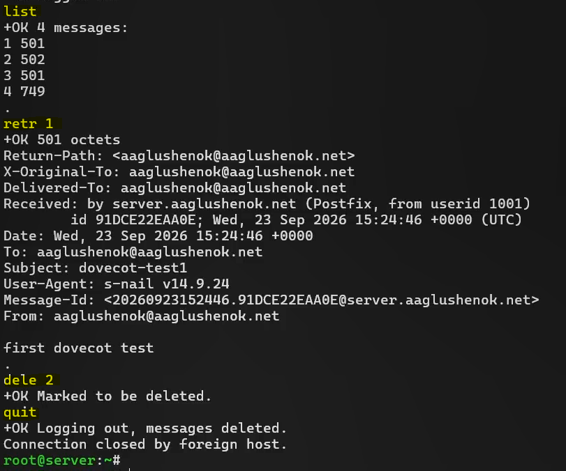
Проверяем результаты работы почтовой службы: видим, что 2-е письмо успешно удалено из почты.
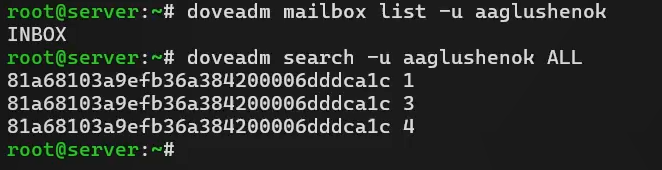
На ВМ server переходим в каталог для внесения изменений в настройки внутреннего окружения /vagrant/provision/server/. В соответствующие подкаталоги прмещаем конфигурационные файлы Dovecot.
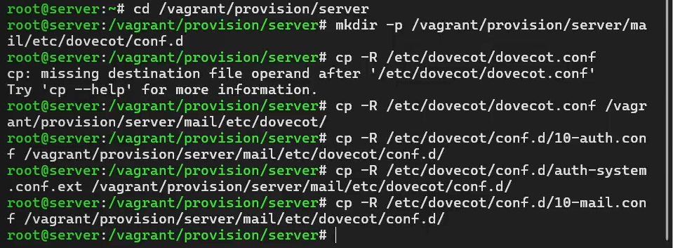
Вносим изменения в файл /vagrant/provision/server/mail.sh.
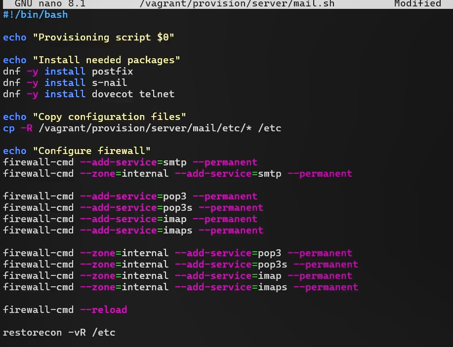
Продолжаем вносить изменения в файл /vagrant/provision/server/mail.sh.
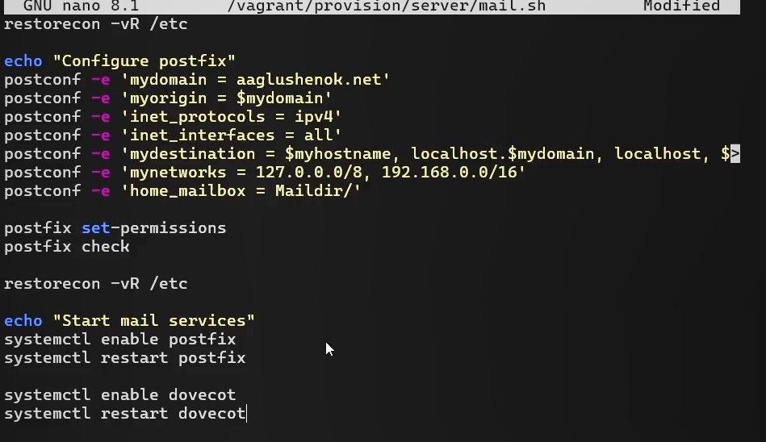
На ВМ client вносим изменения в файл /vagrant/provision/client/mail.sh.
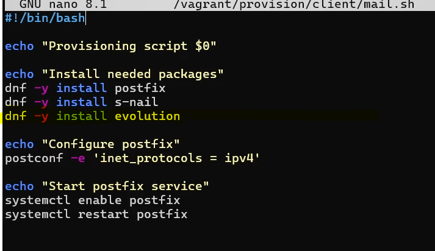
В ходе выполнения лабораторной работы № 9 мне удалось приобрести практические навыки по установке и простейшему конфигурированию POP3/IMAP-сервера.